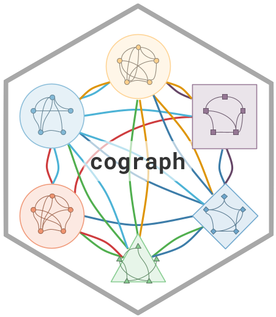

Student Interaction Edge List
Source:R/data-student-interactions.R
student_interactions.RdAn edge list of observed interactions between 34 students during collaborative learning sessions. Each row represents one observed interaction between two students. The same pair may appear multiple times, reflecting repeated interactions.
Format
A data frame with 389 rows and 2 columns:
- from
Character. Anonymized two-letter student code (e.g., "Ac", "Bd")
- to
Character. Anonymized two-letter student code (e.g., "Ce", "Df")
Value
A data frame with 389 rows and 2 columns:
- from
Character. Anonymized two-letter student code.
- to
Character. Anonymized two-letter student code.
Details
The dataset includes self-loops (34 rows where from == to),
which may represent self-directed actions. These can be removed with
student_interactions[student_interactions$from != student_interactions$to, ].
Because interactions repeat, this edge list naturally represents a
multigraph when loaded into igraph with
igraph::graph_from_data_frame().
Examples
# Load and build network
data(student_interactions)
head(student_interactions)
#> from to
#> 1 Ac Ac
#> 2 Ac Ac
#> 3 Ac Ac
#> 4 Ad Ac
#> 5 Ac Ac
#> 6 Ad Ac
# Remove self-loops and build igraph
el <- student_interactions[student_interactions$from != student_interactions$to, ]
if (requireNamespace("igraph", quietly = TRUE)) {
g <- igraph::graph_from_data_frame(el, directed = FALSE)
cat("Students:", igraph::vcount(g), "\n")
cat("Interactions:", igraph::ecount(g), "\n")
}
#> Students: 34
#> Interactions: 355